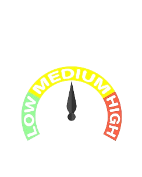

Descrpcción
Aroche es un hermoso pueblo situado en la serranía de Huelva, en Andalucía, España. Rodeado por el impresionante Parque Natural Sierra de Aracena y Picos de Aroche, ofrece una gran variedad de lugares turísticos para explorar.
La gynkana en Aroche te llevará a descubrir los encantos de este lugar.Puedes comenzar tu visita en la calle estrella.
| Ubicación: Calle estrella | |
| Tiempo: 2 Horas | |
|  | Dificultad: media | Autor: Ayuntamiento de Aroche |